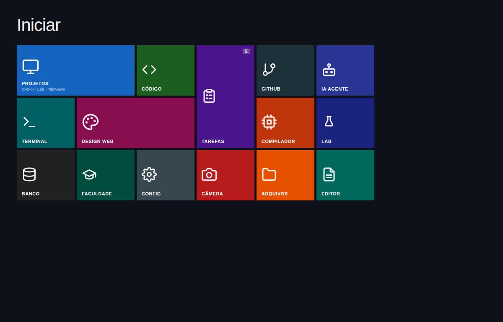
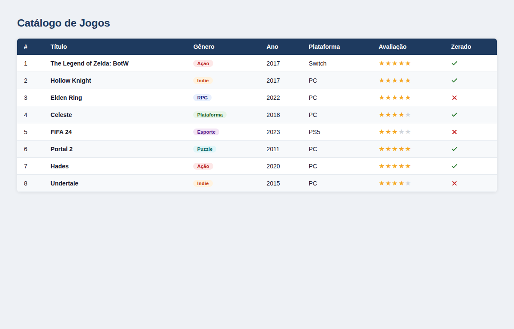
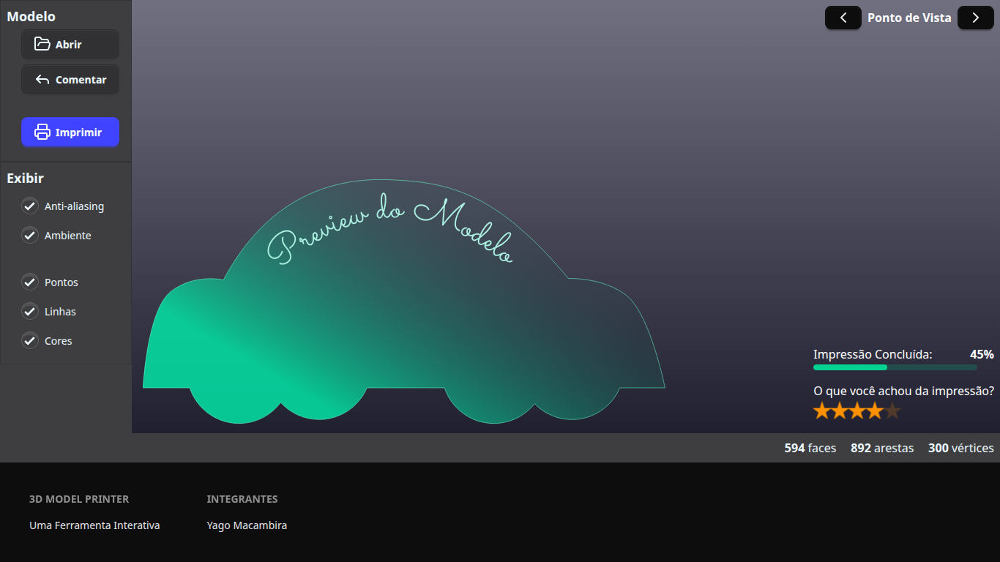

yago@y4g0pop-os
─────────────────
OS Pop!_OS 24.04 LTS
WM Hyprland
Shell fish
Editor nvim
Kernel 7.0.11-pop
Repos 12 públicos
Langs Python · JS · C
Foco IA · multi-agentes · web
─────────────────
Sistema multi-agente LangGraph implementando o Ciclo de Desambiguação Hierárquica (CDH). Benchmarked em 7 LLMs locais via Ollama.
github.com/y4g0o/C-D-HImplementação e testes do ciclo de desambiguação hierárquica. Variações do protocolo CDH em diferentes configs de agentes.
github.com/y4g0o/C-D-AApp full-stack do zero inspirado no TabNews. Projeto pessoal pra aprimorar conhecimento em JS moderno.
github.com/y4g0o/clone-tabnewsEstudos pessoais, experimentos com agentes locais e automações. Repositório de aprendizado contínuo.
github.com/y4g0o/labCompilador académico para a linguagem yagolang. Análise léxica e sintática em Lex/Yacc.
Assistente de IA pessoal automatizado para tarefas do dia a dia.
github.com/y4g0o/ia-assistente
N2 · Metro UI
N2 · Tabela
N2 · App (SolidJS)